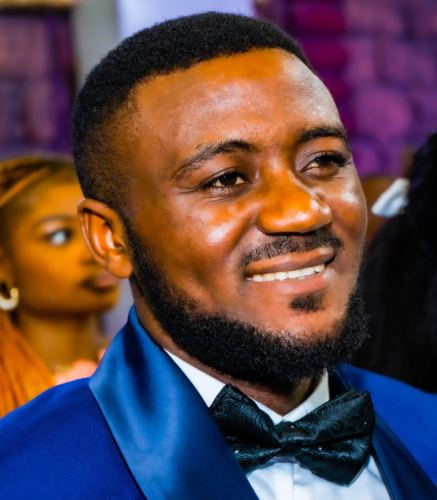

I am David Blaise Ndum, a Cameroonian, from the Northwest region, MOMO division and Batibo subdivision. I was born on 27/07/1995 in Bessi-Batibo village. Professionally, I am a result orientated business manager with 4+ years of experience. Possess a Post-graduate Diploma in Management (ICM UK) and Bachelor’s Degree in Business Management (Financial Management pathway) – ABE UK. I have previously worked as a business manager for a startup business (four years). I have also worked as an accountant for two years. Again, I got four years of teaching experience from a professional school.